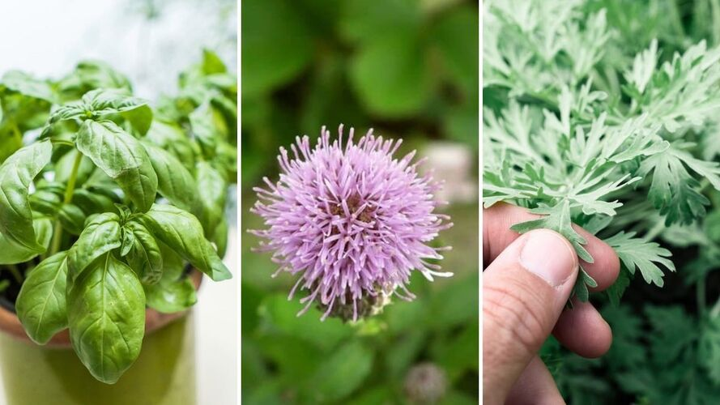
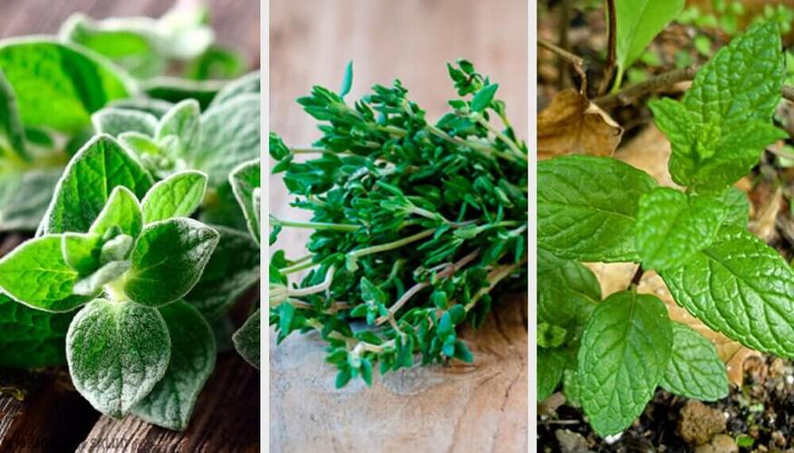
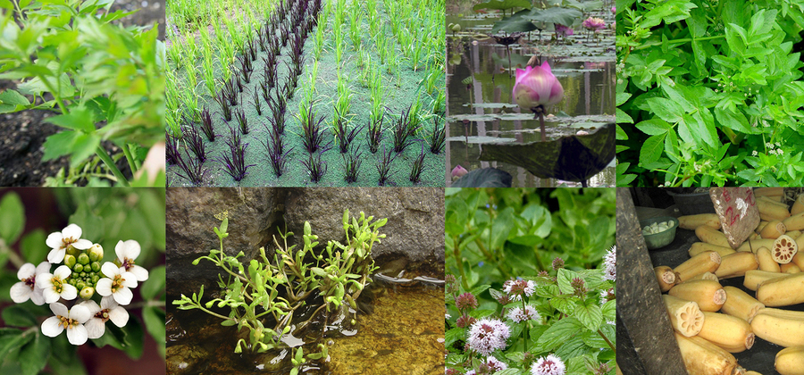
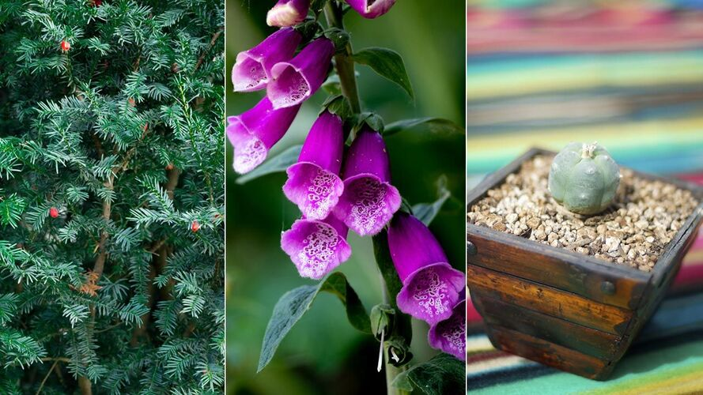

La botánica no es una ciencia; es el arte de insultar a las flores en griego y latin.
Muchas son las lecciones que se pueden extraer del estudio de las plantas, si se procura el verdadero espiritu de la sabiduria.